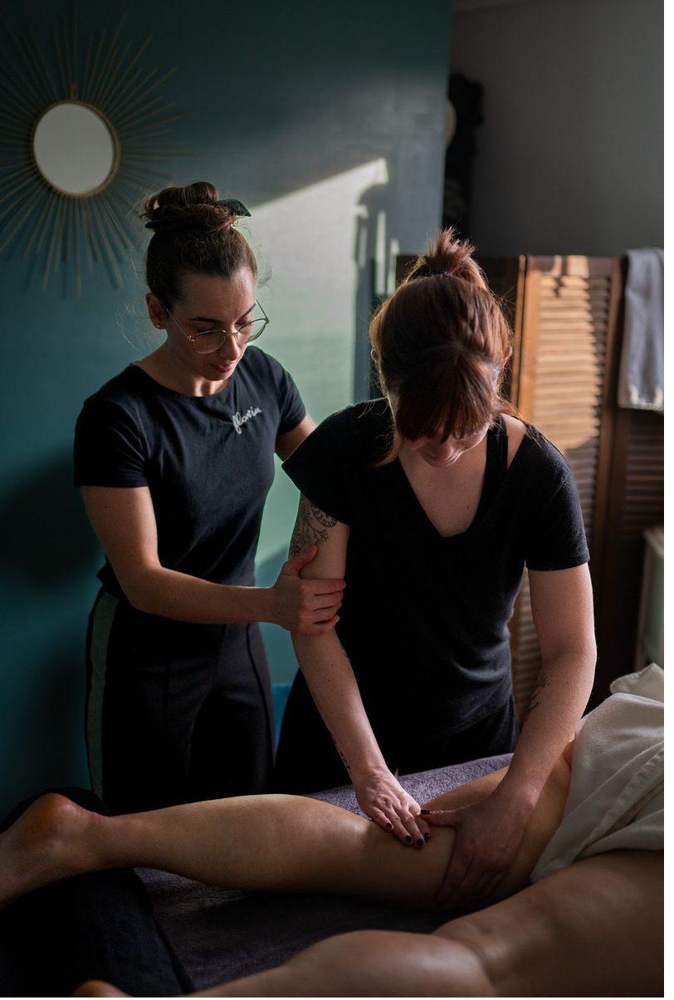

Apprendre le toucher juste, auprès d'une professionnelle de terrain
Je suis Flavia, praticienne en activité depuis 2019, psychomotricienne de formation initiale et diplômée RNCP. Après des années de pratique, d'enseignement et de formation continue, je transmets mes propres outils pédagogiques — avec exigence, patience et amour du métier.

HominiSens Formations en chiffres
Ce que vous saurez faire en sortant de formation
OBJECTIF GÉNÉRAL : acquérir les techniques de base du massage bien-être pour une pratique professionnelle ou personnelle.
COMPÉTENCES VISÉES :
- Préparer le poste de travail, le matériel et l'environnement en respectant les normes d'hygiène, de sécurité et d'ergonomie.
- Accueillir et installer le bénéficiaire dans des conditions optimales de confort et de respect de sa pudeur.
- Exécuter un protocole complet du massage appris — étapes, gestes, rythmes et pressions.
- Adapter le protocole aux besoins, attentes et éventuelles contre-indications du bénéficiaire.
- Évaluer la qualité de sa prestation et identifier ses axes d'amélioration.
Pour qui ?
Professionnels du bien-être
Déjà installés, diplômés ou non : ajoutez de nouveaux protocoles à votre carte de prestations et différenciez-vous.
Personnes en reconversion
Construisez des bases solides et professionnelles pour lancer votre activité, avec des financements adaptés à votre statut.
Entreprises & particuliers
Formez vos salariés au bien-être, ou apprenez à masser vos proches dans un cadre structuré et bienveillant.
Financez votre formation : c'est possible, et je vous accompagne
L'organisme HominiSens Formations est certifié Qualiopi (catégorie « actions de formation », délivrée par CERTIFOPAC, valable jusqu'au 22/09/2028). Cette certification vous permet de prétendre à une prise en charge par un financeur public selon votre statut : OPCO, France Travail, FAF, Région ou FNE. CPF non éligible.
Une organisation à taille humaine, engagée sur l'accessibilité
Formatrice unique et représentante de l'organisme, je gère l'intégralité des aspects pédagogiques, administratifs, commerciaux et logistiques : un interlocuteur unique, du premier contact à votre attestation.
L'organisme s'engage à étudier toute demande d'adaptation pour les personnes en situation de handicap, en lien avec sa référente handicap (Mme Piraino Flavia — 06 74 25 25 54, flaviapiraino@gmail.com) et des partenaires spécialisés. Consulter les partenaires de l'accessibilité handicap.
Intéressé(e) ? Contactez-moi
Décrivez-moi votre projet en deux lignes : je vous réponds personnellement avec le programme détaillé, les dates et les possibilités de financement adaptées à votre situation.
Questions fréquentes sur les formations
Faut-il déjà savoir masser pour se former chez HominiSens ?
Non. Les formations s'adressent à tous les profils : professionnels du bien-être installés (diplômés ou non), personnes en reconversion, salariés d'entreprise, particuliers novices. Des prérequis sont simplement conseillés pour certains modules avancés (détaillés dans les CGV et l'offre de formation).
Y a-t-il des prérequis pour se former ?
Des prérequis sont conseillés pour vivre au mieux votre session de formation. Vous pouvez les retrouver en détails dans les Conditions Générales de Vente et dans l'Offre complète de formation.
Jusqu'à quand puis-je m'inscrire ?
Toute inscription est possible jusqu'à 7 jours avant le début de la session. Une inscription tardive implique simplement des modalités contractuelles et financières différentes, limitant par exemple le délai normal de rétractation (10 jours ouvrés de base).
Puis-je financer ma formation avec mon CPF ?
Non, le CPF n'est pas éligible. En revanche, l'organisme étant certifié Qualiopi, vous pouvez mobiliser un OPCO (salariés), France Travail (demandeurs d'emploi), un FAF (indépendants), la Région ou le FNE. Je vous fournis devis et programme détaillé pour votre dossier.
Que reçoit-on à l'issue de la formation ?
Après une évaluation finale pratique en fin de session, une attestation de formation détaillant les compétences travaillées est fournie à chaque stagiaire. Depuis 2021, 100 % des stagiaires ont reçu leur attestation et utilisent leurs nouvelles compétences dans leur vie personnelle ou professionnelle.
Les formations sont-elles accessibles aux personnes en situation de handicap ?
L'organisme s'engage à étudier toute demande d'adaptation, en lien avec sa référente handicap (Mme Piraino Flavia, 06 74 25 25 54) et des partenaires spécialisés. Contactez-moi en amont pour préparer votre accueil dans les meilleures conditions.
Documents qualité : Organigramme & références professionnelles · Fiche de réclamation · Conditions générales de vente